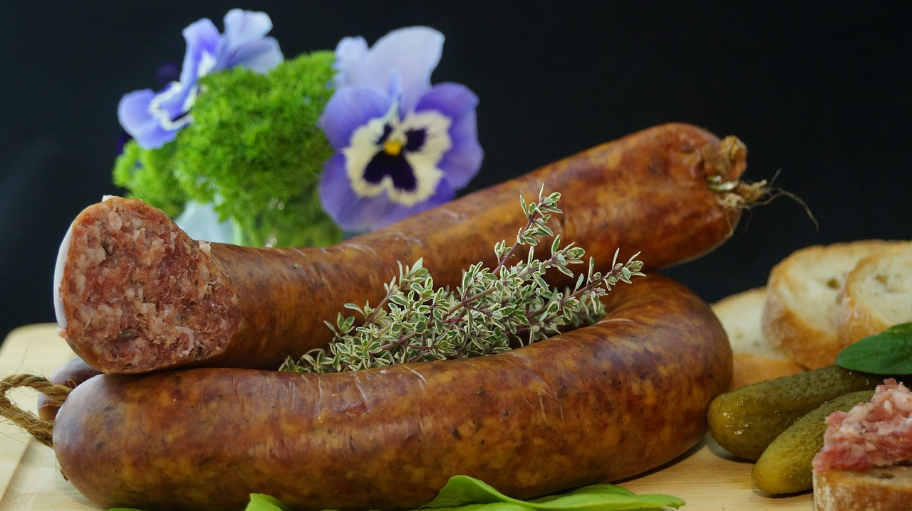

Pasta with Italian Sausage
This is the part where a cooking blog would talk about their long lost aunt who gave them this recipe. Why lie? I stole it and modified it from an amazing cookbook that I highly recommend and you can find it here.

Ingredients
- 1 small sweet onion
- 2 tsp minced garlic
- 3 tbsp olive oil
- 5 ct mild italian sausage links
- salt and pepper
- 14 oz can roasted chopped tomatoes
- 1 tbsp tomato paste
- 1 lbs choice pasta
- freshly grated parmesan cheese

Instructions
- Finely chop onion and layout remaining ingredients. Heat 1 tbsp oil in skillet and brown sausages in it. When browned set aside on paper towel.
- Heat remaining oil in skillet, add onion and cook to desired caramelization. Add garlic and a good pinch of salt and cook till garlic colors.
- Add tomatoes, tomato paste, and 1/4 c water. Bring to simmer and cook 10 min, stirring to incorporate frond.
- Bring pasta water to rolling boil (Shoot for 2% salt content or 2 tbsp for 1 gallon.)
- While water is boiling cut the sausages into thick slices and add to sauce.
- As the sauce is reducing cook the pasta to al dente and season the sauce to taste.
- Drain the pasta, return to warm pot, add the sauce and mix. Serve immediately with parmesan cheese.
Note: If you wish to add additional vegetables (sweet peppers and eggplant work well) they should be added in after the onion is softened and then cooked together before adding the garlic.
